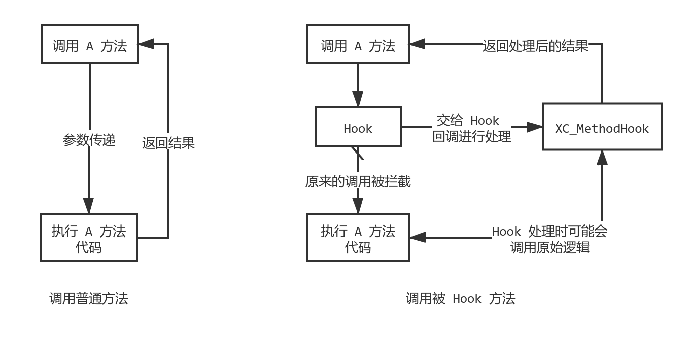

前言 Xposed 是 Android 平台上著名的 Java 层 Hook 框架，通过在 Android 设备上安装 Xposed 框架，编写 Xposed 模块，可实现对任意 Android 应用的 Java 方法的 Hook，以及应用资源的替换。
（Hook 是一种函数钩子技术，能够对函数进行接管，从而修改函数的返回值，改变函数的原始意图）
本文将基于 Xposed 最新的开源代码对 Xposed 的实现原理进行分析。Xposed 有两种实现版本，一个是基于 Dalvik 虚拟机的实现，它是针对早期的 Android 4.4 之前的 Android 设备设计的；另一个是基于 ART 虚拟机的实现，自 Android 5.0 系统开始，Android 系统正式采用了 ART 虚拟机模式运行，Dalvik 就成了历史，目前市面上几乎所有的手机都是以 ART 模式运行的，下面将主要对于 ART 上的 Xposed 实现进行详细分析，对于 Dalvik 上的 Xposed 的实现，进行必要性的分析。
通过了解 Xposed 的实现原理可以学到在 Android 平台上对于 Java 层代码的一种 Hook 机制的实现，同时复习 Android 系统的启动原理以及增加对于 Android ART 虚拟机运行原理的了解。
Xposed 使用方法 在对 Xposed 进行分析之前，先回顾一下 Xposed 基本 API 的使用。
Xposed 的核心用法就是对一个 Java 方法进行 Hook，它的典型调用如下：
1 2 3 4 5 6 7 8 9 10 11 12 13 14 15 XposedHelpers.findAndHookMethod(Application.class, "onCreate" , Context.class, new XC_MethodHook() { @Override protected void beforeHookedMethod (MethodHookParam param) throws Throwable Application app = (Application) param.thisObject; Context context = (Context) param.args[0 ]; Log.d(TAG, "Application#onCreate(Context); this: " + app + " arg: " + context); param.setResult(null ); } @Override protected void afterHookedMethod (MethodHookParam param) throws Throwable super .afterHookedMethod(param); } });
以上代码的意思是对 Application 这个类的 onCreate 方法进行 Hook，并使用 XC_MethodHook 对象提供一个 Hook 处理方法来接管原来方法的逻辑，当应用的 Application 类型的 onCreate 方法被调用时，beforeHookedMethod 将在被调用之前执行，同时 onCreate 的参数将会传递给 beforeHookedMethod 方法进行处理，上面的处理只是将参数打印了出来（一个 Context），同时还可以拿到被调用的 this 目标对象，也就是 Application 的对象，还可以使用 setResult 方法更改原始方法的返回值，不过这里的 Application#onCreate 方法是 void 返回类型的，setResult 不起作用，如果是其他类型，那么原方法的返回值将被更改。
这样就达到了修改一个 Java 方法的目的，即改变了原始方法的逻辑和意图。
1 2 3 4 5 public class App extends Application @Override void onCreate (Context context) } }
可以看到，如果要使用 Xposed 对一个 Java 方法进行 Hook，需要提供要 Hook 方法的名字、参数列表类型和方法所在类，以及处理 Hook 的回调方法。
下面正式开始分析。
Xposed 原理概述 首先概述 Xposed 原理，之后再对具体细节进行分析。
Xposed 是一个 Hook 框架，它提供了对任意 Android 应用的 Java 方法进行 Hook 的一种方法，通常它的使用方法如下：
首先按照 Xposed 官网提供的开发规范编写一个 Xposed 模块，它是一个普通的 Android 应用，包含一块开发者自己定义的代码，这块代码有能力通过 Xposed 框架提供的 Hook API 对任意应用的 Java 方法进行 Hook。
在要启用 Xposed 的 Android 设备上安装 Xposed 框架和这个 Xposed 模块，然后在 Xposed 框架应用中启用这个 Xposed 模块，重新启动设备后，Xposed 模块将被激活，当任意的应用运行起来后，Xposed 模块的 Hook 代码将会在这个应用进程中被加载，然后执行，从而对这个应用的 Java 方法进行指定 Hook 操作。
那么根据以上使用方法实现一个 Xposed 框架需要分成如下几个部分：
提供用于 Hook 操作的 API，为了让开发者进行模块开发。它通常是一个 jar 包；
提供一个具有界面的管理器应用，用于安装和管理 Xposed 本身和 Xposed 模块；
提供将代码加载到每一个应用进程中的能力，目的是支持 Xposed 模块的代码在进程中使用 Xposed API 进行 Hook 操作；
提供 Hook 任意 Java 方法的能力，为 Xposed 模块的调用提供支持，当 Xposed 模块在应用进程中执行时可对方法进行 Hook。
前两点对于我们开发者来说都很熟悉，没有什么难点，后面两点才是实现 Xposed 的核心。
首先是 Xposed 怎样实现的将代码加载到每一个应用进程中（Xposed 是基于 Root 权限实现的，所以有修改 Android 系统的能力）？
Xposed 是通过修改系统 zygote 进程的实现将代码注入应用进程中的。
为了知道 Xposed 是如何修改 Zygote 进程的，下面首先介绍 Android 系统 Zygote 相关内容。
Android zygote 进程 zygote 进程是 Android 系统中第一个拥有 Java 运行环境的进程，它是由用户空间 1 号进程 init 进程通过解析 init.rc 文件创建出来的，从 init 进程 fork 而来。
zygote 进程是一个孵化器。Android 系统中所有运行在 Java 虚拟机中的系统服务以及应用均由 zygote 进程孵化而来。
zygote 通过克隆（fork）的方式创建子进程，fork 出来的子进程将继承父进程的所有资源，基于这个特性，zygote 进程在启动过程将创建 Java ART 虚拟机，预加载一个 Java 进程需要的所有系统资源，之后子进程被创建后，就可以直接使用这些资源运行了。
自 Android 5.0 系统开始，zygote 不再是一个进程，而是两个进程，一个是 32 位 zygote，负责孵化 32 位进程（为了兼容使用了 armeabi 和 armeabi-v7a 等 32 位架构的本地动态库的应用），另一个是 64 位 zygote 进程，负责孵化 64 位应用进程（可加载 arm64-v8a 等 64 位架构本地库）。
init 进程是 Android 系统中的 pid 为 1 的进程，是用户空间的第一个进程，它会在 Android 系统启动时被内核创建出来，之后会对 init.rc 文件进行解析，init.rc 文件是一个按照特定规则编写的脚本文件，init 进程通过解析它的规则来创建对应的服务进程。下面看一下 zygote 相关的 rc 文件的内容。
注：自 Android 5.0 开始，32 位 zygote 启动内容在 init.zygote32.rc 文件中，64 位 zygote 启动内容在 init.zygote64.rc 中。
注：自 Android 9.0 开始，两个 zygote 启动配置放在一个文件中 init.zygote64_32.rc。
这里看一下 Android 8.1 系统的 32 位 zygote 的 rc 文件内容：
1 2 3 4 5 6 7 8 9 10 # init.zygote32.rc service zygote /system/bin/app_process -Xzygote /system/bin --zygote --start-system-server class main socket zygote stream 660 root system onrestart write /sys/android_power/request_state wake onrestart write /sys/power/state on onrestart restart media onrestart restart netd writepid /dev/cpuset/foreground/tasks
上面的含义是，创建一个名为 zygote 的服务进程，它的可执行文件在 /system/bin/app_process 中，后面的 -Xzygote、/system.bin 等是可执行文件的 main 函数将要接收的参数。
具体的 init 进程和 zygote 进程的启动细节，可以参考之前的文章：
Android init 进程启动分析
Android zygote 进程启动分析
那么现在回到 Xposed，Xposed 对 zygote 进程的实现源码进行修改后，重新编译出 app_process 可执行文件，替换了系统的 app_process 文件（包括 64 位 zygote），并在其中加载了 XposedBridge.jar 这个 Dex 代码包，它包含 Xposed 的 Java 层实现代码和提供给 Xposed 模块的 API 代码，那么当 init 进程启动 zygote 服务进程时，将执行修改过的 app_process 文件，此时 zygote 进程就具有了 Xposed 的代码，Xposed 可以进行加载 Xposed 模块代码等任意操作了。
所有 Android 应用都是运行在 Java 虚拟机上的，所有的 Android 应用都是 zygote 的子进程，那么当 Android 应用进程启动后，将具备 zygote 进程加载的所有资源，从而将 Xposed 代码继承到了 Android 应用进程中，实现了将 Xposed 代码加载到每一个进程中的目的。
接下来是如何实现对应用中 Java 方法的 Hook。Hook 的基本原理如下，将 Java 方法的原始逻辑，转接到一个中间处理方法上，这个处理方法会对原始 Java 方法的参数进行转发，转发到一个用于处理 Hook 的方法上（即 XC_MethodHook 的实现），等处理 Hook 的方法执行自定义逻辑后（自定义逻辑可选择调用原始逻辑先获取原始返回值，再处理），再返回新的返回值。

下面分别是 Xposed 在 Dalvik 虚拟机和 ART 虚拟机下的 Hook 实现。
基于 Dalvik 的方法 Hook 基于 Dalvik 的 Hook 方案是通过将被 Hook 方法修改为一个 JNI 方法，然后绑定一个 Xposed 自定义处理方法逻辑的函数上来实现的。
当需要 Hook 一个指定方法时，需要提供要 Hook 方法的名字、参数列表类型和方法所在类型，还要提供一个用于处理 Hook 的回调，回调方法用于修改原始方法的逻辑，它可以接收 Hook 方法的参数，然后返回一个新的返回值。
首先 Xposed 会取得这个方法的反射表示对象（例如通过 Class.getDeclaredMethod），它是一个 java.lang.reflect.Method 对象，然后取得这个对象的一个私有成员变量 slot 的值，将它和处理 Hook 的回调传递给 Xposed 的 Native 层代码，这个 slot 变量实际上是一个 Java 方法在虚拟机中的索引，使用这个索引可以从 Dalvik 中用于表示 Java 类的 ClassObject 映射类型的 directMethod 和 virtualMethods 数组中取出一个 Method 对象，它在虚拟机中表示一个 Java 方法，Xposed 的 Native 层代码接收到 Xposed Java 层传递过来的 slot 变量后，取出虚拟机中的 Method 对象，然后将这个 Method 对象的类型设置为 JNI 方法，即前面带有 native 修饰符的方法，然后将它的 nativeFunc 赋值给一个处理 Hook 逻辑的函数上，这个函数中将对这个 Method 的参数进行处理，传递给一开始提供的 Java 层中用于处理 Hook 的回调方法，让它来决定方法的新逻辑，从而返回新的返回值。此时便完成了 Hook。
那么调用一个被 Hook 的方法的过程是：当一个 Android 应用内的代码调用一个被 Hook 的方法时，Dalvik 将会进行代码的解释执行，Java 方法进入 Dalvik 虚拟机中会被转化为一个 Method 对象，然后虚拟机判断这个方法如果是一个 JNI 方法，就会直接调用它绑定的的 nativeFunc 函数，那么就走到了 Xposed 处理 Hook 的函数中，这个函数将这个被 Hook 方法的参数进行转发，让 Xposed 模块提供的处理 Hook 的回调方法来接管原来的逻辑，获得新的返回值返回给被 Hook 方法，即可完成整个 Hook 操作。
基于 ART 的方法 Hook 基于 ART 的 Hook 方案相比 Dalvik 要复杂一些，需要重新修改编译 ART 虚拟机的源码，重新编译出 ART 虚拟机的可执行文件 libart.so，替换 Android 系统中的 ART 虚拟机实现。
它的核心原理就是直接修改一个方法对应的汇编代码的地址，让方法直接跳转到指定地址执行，然后就可以执行自定义的逻辑进行 Hook 处理了。
ART 虚拟机为了提高执行效率，采用了 AOT（Ahead Of Time，预编译） 模式运行，在应用运行之前先将整个 APK 包含的 Java 编译为二进制代码，然后应用运行时将执行每个方法对应的机器代码，比采用 JIT（Just In Time Compiler，即时编译） 的 Dalvik 虚拟机每次在运行时才编译代码执行的效率更高。
前面的过程和 Dalvik 一样，都需要在 Hook 一个指定方法时，提供要 Hook 方法的名字、参数列表类型和方法所在类型，和一个用于处理 Hook 的回调，这个回调用于修改原始方法的逻辑。
接下来 Xposed 取得这个方法的反射表示对象，它是一个 java.lang.reflect.Method 对象，然后和用于处理 Hook 的回调一起传递给 Xposed 的 Native 层代码，Native 层代码使用 ArtMethod 的一个静态转换方法，将 Java 层的反射对象 Method 转换为一个 ART 中用于表示一个 Java 方法的 ArtMethod 对象，获取这个表示被 Hook 的 Java 方法的 ArtMethod 对象后，会创建它的副本对象用于备份，备份目的是可以在可是的时候再调用原始方法，然后给这个 ArtMethod 对象重新设置汇编代码的地址，这个地址指向一段汇编代码，这个汇编代码是一段蹦床代码（Trampoline），会跳入原本用于处理 Java 动态代理的方法的函数，Xposed 对其进行了修改，在其中加入了处理 Hook 的逻辑，也就是转发被 Hook 方法的参数给处理 Hook 的回调方法，让 Hook 回调方法处理被 Hook 方法的逻辑，从而完成 Hook。至此就完成了 ART 中的 Hook 处理。
那么调用一个被 Hook 的方法的过程是：当一个 Android 应用内代码调用一个被 Hook 的方法时，ART 将会对方法代码进行执行，首先这个 Java 方法在 ART 虚拟机中将使用一个 ArtMethod 对象表示，然后进入 ART 的 Java 方法执行函数中，会跳入一段蹦床代码中进行执行，这段蹦床代码又会跳入这个 ArtMethod 对象设置的汇编代码地址处，从而执行到 Xposed 用于处理 Hook 的代码中，之后完成 Hook 逻辑。
上面使用书面语言分别概述了基于 Dalvik 和 ART 的方法 Hook 的实现，目的是对整个 Xposed 实现对方法的 Hook 原理进行概括，建立一个初步的印象。真正的细节还是在源代码中，为了分析最终源代码，下面进一步对 Xposed 进行分析。
Xposed 工作流程 为了进一步分析 Xposed 的实现原理，先对 Xposed 的整体工作流程进行了解。
要使 Xposed 在 Android 设备上工作，首先需要安装 Xposed 框架。
首先获取 XposedInstaller 应用（去官方下载，或者通过 clone XposedInstaller 项目后自行编译），安装到已经 root 的设备上，然后打开 XposedInstaller。
XposedInstaller 主页会有“INSTALL/UPDATE” 的按钮，点击将会出现 Install 和 Install via recovery 两个选择，一个是直接进行安装；另一个是通过 recovery 进行刷入安装。不管选择哪个，都会首先从服务器下载相同的 xposed 补丁包。
XposedInstaller 会根据系统版本和 CPU 支持架构下载对应的系统补丁包。
在 ARM64 架构 CPU 的 Android 8.1 系统上，补丁包内容如下：
1 2 3 4 5 6 7 8 9 10 11 12 13 14 15 16 17 18 19 20 21 22 23 24 25 26 27 28 29 30 31 32 33 34 35 36 37 38 39 40 41 xposed-v90-sdk27-arm64-beta3.zip +-META-INF │ +- CERT.RSA │ +- CERT.SF │ +- MANIFEST.MF │ +- com/google/android │ +- flash-script.sh │ +- update-binary │ +- updater-script │ +- system +- xposed.prop +- bin | +- app_process32_xposed | +- app_process64_xposed | +- dex2oat | +- dexdiag | +- dexlist | +- dexoptanalyzer | +- oatdump | +- patchoat | +- profman | +- framework | +- XposedBridge.jar | +- lib | +- libart-compiler.so | +- libart-dexlayout.so | +- libart.so | +- libopenjdkjvm.so | +- libsigchain.so | +- libxposed_art.so | +- lib64 +- libart-compiler.so +- libart-disassembler.so +- libart.so +- libopenjdkjvm.so +- libsigchain.so +- libxposed_art.so
压缩包名为 xposed-v90-sdk27-arm64-beta3.zip，文件名包含系统版本、CPU 架构和 Xposed 版本信息。
META-INF 目录存放文件签名信息，和 Xposed 刷机脚本 flash-script.sh 文件，update-binary 为刷入文件时执行的文件，它的源代码在 Android 源代码 bootable/recovery/updater/ 目录中。
system 目录为 Xposed 所需的文件，刷入时将会复制到系统 system 目录下，同名文件将进行覆盖，其中 xposed.prop 为 Xposed 的属性文件，里面会存放 Xposed 版本相关信息，如下：
1 2 3 4 5 version=90-beta3 arch=arm64 minsdk=27 maxsdk=27 requires:fbe_aware=1
bin 目录存放系统可执行文件；framwrok 目录存放 Xposed 的 Java 层 Dex 代码包，用于在 Zygote 进程中进行加载；lib、lib64 是 32 位和 64 位系统库，包括 ART 虚拟机库 libart.so 和依赖的库，还有 Xposed Native 层代码的实现 libxposed_art.so。
回到 XposedInstaller 中，如果选择了 Install，那么首先将压缩包中的 system 目录下的的可执行文件以及依赖库、配置文件等复制入系统 system 中覆盖相应系统文件，然后请求重启 Android 系统，重启后开机过程中，系统将会执行 app_process 可执行文件，从而启动 Xposed 修改过的 zygote 进程，其中会把 XposedBridge.jar 代码包加载起来，加载后其中的 Java 代码会加载已经安装的 Xposed 模块，当手机中的应用进程启动后，Xposed 模块代码将会被包含在应用进程中，开始工作；
如果是 Install via recovery，将创建文件 /cache/recovery/command 并写入指定刷机包路径的刷机命令，然后重启手机进入 recovery 模式，recovery 模式会自动执行 command 文件中的命令将 Xposed 文件刷入，然后正常重启至系统，启动过程和上面一致。
了解了 Xposed 的整体工作流程，下面开始着手进行源码分析。
Xposed 项目结构 首先了解 Xposed 开源项目的结构，Xposed 包含如下几个开源项目：
Xposed 仓库地址：https://github.com/rovo89/Xposed
Xposed Native 层代码的实现，主要修改了系统 app_process 的实现（即 zygote 服务进程的实现），为将 Hook 代码注入每个应用进程提供了入口。
XposedBridge 仓库地址：https://github.com/rovo89/XposedBridge
Xposed Java 层的代码，它将单独作为一个 jar 包的形式通过 zygote 的分裂（fork）注入到每一个应用进程中，内部会 Xposed 模块，并为 Xposed 模块中的 Hook 操作提供 API 支持。
XposedInstaller 仓库地址：https://github.com/rovo89/XposedInstaller
统一管理 Xposed 框架的 Android 应用，也是一个 Xposed 框架安装器，用于安装更新 Xposed 框架核心以及作为统一管理 Xposed 模块安装的模块管理器。
android_art 仓库地址：https://github.com/rovo89/android_art
Xposed 修改后的 Android ART 虚拟机的实现，将编译出 libart.so 和其依赖库，替换系统的 ART 虚拟机实现。包含方法 Hook 的核心实现。
这个仓库最新分支是基于 Android Nougat MR2 源码修改的 ART 代码，目前 Xposed 最新版本支持到了 Android 8.1 系统，说明作者没有开源出最新代码，不过都是基于 ART 实现的 Hook，核心 Hook 实现是一致的，不影响分析。
仓库地址：https://github.com/rovo89/XposedTools
用于编译 Xposed 框架的脚本工具。
目前只分析 Xposed 的实现，不需要对 Xposed 进行定制，所以先不关注 XposedTools 这个项目。
Xposed 源码分析 可以对上面的项目进行 clone，然后用 Android Studio 和 VS Code 打开源代码，方便阅读。下面进入源码中分析具体实现。
Xposed 安装 下载 首先从 Xposed 的安装开始分析，这部分代码的实现在 XposedInstaller 中。
在一台 Root 过的设备上安装 XposedInstaller 后打开，点击主页的“INSTALL/UPDATE”，会弹出一个对话框，选择“Install”或“Install via recovery”安装 Xposed 框架，此时会首先进行框架核心文件的下载，进入 StatusInstallerFragment#download 方法中：
1 2 3 4 5 6 7 8 9 10 11 12 13 14 15 16 17 18 19 20 21 private void download (Context context, String title, FrameworkZips.Type type, final RunnableWithParam<File> callback) OnlineFrameworkZip zip = FrameworkZips.getOnline(title, type); new DownloadsUtil.Builder(context) .setTitle(zip.title) 2 .setUrl(zip.url) .setDestinationFromUrl(DownloadsUtil.DOWNLOAD_FRAMEWORK) .setCallback(new DownloadFinishedCallback() { @Override public void onDownloadFinished (Context context, DownloadInfo info) LOCAL_ZIP_LOADER.triggerReload(true ); callback.run(new File(info.localFilename)); } }) .setMimeType(DownloadsUtil.MIME_TYPES.ZIP) .setDialog(true ) .download(); }
其中 zip.url 为 Xposed 框架压缩包的下载地址，我们重点关注安装，所以这里简要描述 zip 对象，zip 是 OnlineFrameworkZip 类的对象，表示一个 Xposed 框架包，它包含 title、type 和 url 三个成员，type 有两种，Installer 和 Uninstaller，即安装包和卸载包，都是包含刷机脚本的 Xposed 补丁包（就是上面工作流程中的压缩包），title 有三种，Xposed 测试版、Xposed 正式版、和 Uninstaller，用于界面显示。上面的 zip.url 在 Android 8.1 的 Pixel 手机上运行出来是 http://dl-xda.xposed.info/framework/sdk27/arm64/xposed-v90-sdk27-arm64-beta3.zip，这个 url 是根据设备支持的 CPU 架构、系统版本和 Xposed 当前最新版本组合出来的，组合规则由一个 framework.json 提供，它的本地路径是 /data/data/de.robv.android.xposed.installer/cache/framework.json，是从 http://dl-xda.xposed.info/framework.json 解析后得到的，内容如下：
1 2 3 4 5 6 7 8 9 10 11 12 13 14 15 16 17 18 19 20 21 22 23 24 25 26 27 28 29 30 31 32 33 34 35 36 37 38 39 40 41 42 43 44 45 46 47 48 49 50 51 { "zips" : [ { "title" : "Version 90-beta$(version)" , "url" : "http://dl-xda.xposed.info/framework/sdk$(sdk)/$(arch)/xposed-v90-sdk$(sdk)-$(arch)-beta$(version).zip" , "versions" : [ { "version" : "3" , "current" : true }, { "version" : "2" }, { "version" : "1" } ], "archs" : ["arm" , "arm64" , "x86" ], "sdks" : [26 , 27 ] }, { "title" : "Version $(version)" , "url" : "http://dl-xda.xposed.info/framework/sdk$(sdk)/$(arch)/xposed-v$(version)-sdk$(sdk)-$(arch).zip" , "versions" : [ { "version" : "89" , "current" : true }, { "version" : "88.2" }, { "version" : "88.1" }, { "version" : "88" }, ... ], "archs" : ["arm" , "arm64" , "x86" ], "sdks" : [21 , 22 , 23 , 24 , 25 ], "exclude" : [ { "versions" : ["88.1" ], "sdks" : [21 , 22 , 23 ] }, { "versions" : ["78" , "79" , "80" , "81" , "82" , "83" , "84" , "85" , "86" , "87" ], "sdks" : [24 , 25 ] }, ... ] }, { "title" : "Uninstaller ($(version))" , "url" : "http://dl-xda.xposed.info/framework/uninstaller/xposed-uninstaller-$(version)-$(arch).zip" , "type" : "uninstaller" , "versions" : [ { "version" : "20180117" , "current" : true }, { "version" : "20180108" }, ... ], "archs" : ["arm" , "arm64" , "x86" ], "sdks" : [21 , 22 , 23 , 24 , 25 , 26 , 27 ] } ] }
能看到，其中包含了 Xposed 测试版、Xposed 正式版、和 Xposed 的 Uninstaller 三种 title 的下载信息，每个下载信息中的 url 为下载地址的模板，versions 为可用的版本，根据系统信息和 Xposed 版本对 url 模板进行填充后组成下载地址。
回到上面的下载，下载成功后，将进入回调根据用户选择的安装类型进行安装，看一下回调的实现：
1 2 3 4 5 6 7 8 9 10 11 12 13 14 15 16 17 18 19 20 21 22 23 24 25 26 27 if (action == ACTION_FLASH) { runAfterDownload = new RunnableWithParam<File>() { @Override public void run (File file) flash(context, new FlashDirectly(file, type, title, false )); } }; } else if (action == ACTION_FLASH_RECOVERY) { runAfterDownload = new RunnableWithParam<File>() { @Override public void run (File file) flash(context, new FlashRecoveryAuto(file, type, title)); } }; } else if (action == ACTION_SAVE) { runAfterDownload = new RunnableWithParam<File>() { @Override public void run (File file) saveTo(context, file); } }; }
上面两个分支分别对应 Install 和 Install via recovery 两种安装方式的实现，flash 方法将会启动一个新的负责展示安装执行的界面，然后执行传入的 Flashable 对象的 flash 方法，执行成功后展示一个对话框，询问用户是否重启，重启后将激活 Xposed。分别看一下两种 Flashable 的实现。
直接刷入 1 2 3 4 5 6 7 8 9 10 11 12 13 14 15 16 17 18 19 20 21 22 23 24 25 26 27 28 29 30 31 32 33 34 35 36 37 38 39 40 41 42 43 44 45 46 47 48 49 50 51 public void flash (Context context, FlashCallback callback) ZipCheckResult zipCheck = openAndCheckZip(callback); if (zipCheck == null ) { return ; } ZipFile zip = zipCheck.getZip(); if (!zipCheck.isFlashableInApp()) { triggerError(callback, FlashCallback.ERROR_NOT_FLASHABLE_IN_APP); closeSilently(zip); return ; } ZipEntry entry = zip.getEntry("META-INF/com/google/android/update-binary" ); File updateBinaryFile = new File(XposedApp.getInstance().getCacheDir(), "update-binary" ); try { AssetUtil.writeStreamToFile(zip.getInputStream(entry), updateBinaryFile, 0700 ); } catch (IOException e) { Log.e(XposedApp.TAG, "Could not extract update-binary" , e); triggerError(callback, FlashCallback.ERROR_INVALID_ZIP); return ; } finally { closeSilently(zip); } RootUtil rootUtil = new RootUtil(); if (!rootUtil.startShell(callback)) { return ; } callback.onStarted(); rootUtil.execute("export NO_UIPRINT=1" , callback); if (mSystemless) { rootUtil.execute("export SYSTEMLESS=1" , callback); } int result = rootUtil.execute(getShellPath(updateBinaryFile) + " 2 1 " + getShellPath(mZipPath), callback); if (result != FlashCallback.OK) { triggerError(callback, result); return ; } callback.onDone(); }
直接刷入会直接使用 Root 身份执行 update-binary 可执行文件，其中会调用 flash-script.sh 文件，它将压缩包中的目录复制到对应的系统目录中，同名文件进行覆盖，在覆盖前会对原始系统文件进行备份，例如 libart.so.orig.gz，为了在卸载时恢复。
刷入后正常重启系统，系统在启动时将会加载自定义的 app_process 可执行文件，启动了带有 Xposed 框架代码的定制版 zygote 服务进程，为 Xposed 提供支持。
使用 recovery 刷入 1 2 3 4 5 6 7 8 9 10 11 12 13 14 15 16 17 18 19 20 21 22 23 24 25 26 27 28 29 30 31 32 33 34 35 36 37 38 39 40 41 42 43 44 45 46 47 48 49 50 51 52 53 @Override public void flash (Context context, FlashCallback callback) ZipCheckResult zipCheck = openAndCheckZip(callback); if (zipCheck == null ) { return ; } else { closeSilently(zipCheck.getZip()); } final String zipName = mZipPath.getName(); String cmd; RootUtil rootUtil = new RootUtil(); if (!rootUtil.startShell(callback)) { return ; } callback.onStarted(); if (rootUtil.execute("ls /cache/recovery" , null ) != 0 ) { callback.onLine(context.getString(R.string.file_creating_directory, "/cache/recovery" )); if (rootUtil.executeWithBusybox("mkdir /cache/recovery" , callback) != 0 ) { callback.onError(FlashCallback.ERROR_GENERIC, context.getString(R.string.file_create_directory_failed, "/cache/recovery" )); return ; } } callback.onLine(context.getString(R.string.file_copying, zipName)); cmd = "cp -a " + RootUtil.getShellPath(mZipPath) + " /cache/recovery/" + zipName; if (rootUtil.executeWithBusybox(cmd, callback) != 0 ) { callback.onError(FlashCallback.ERROR_GENERIC, context.getString(R.string.file_copy_failed, zipName, "/cache/recovery" )); return ; } callback.onLine(context.getString(R.string.file_writing_recovery_command)); cmd = "echo --update_package=/cache/recovery/" + zipName + " > /cache/recovery/command" ; if (rootUtil.execute(cmd, callback) != 0 ) { callback.onError(FlashCallback.ERROR_GENERIC, context.getString(R.string.file_writing_recovery_command_failed)); return ; } callback.onLine(context.getString(R.string.auto_flash_note, zipName)); callback.onDone(); }
通过 recovery 模式进行刷入就是首先复制压缩包到 /cache/recovery/ 中，然后向 /cache/recovery/command 文件中写入一条刷入压缩包的命令，然后询问用户是否重启至 recovery 模式，当系统处于 recovery 模式后将会自动检测 command 文件是否存在，如果存在将执行其中的指令，然后执行刷机包提供的脚本，过程和上面直接刷入一致，首先执行 update-binary 可执行文件，然后其中会调用 flash-script.sh 文件，将刷机包中的文件进行复制。此时，系统退出 reocvery 正常重启后将会加载成功 Xposed。
这里就分析完了安装，主要是通过刷入文件将系统关键组件替换为 Xposed 修改过的实现。
下面开始分析 Xposed 的启动，当系统启动后，init 进程将会通过解析 init.rc 文件后执行 app_process 创建 zygote 进程，此时就进入了 Xposed 重新编译修改过的 app_process 文件中。
Xposed 启动 这部分的实现代码在项目 Xposed 中，是使用 C++ 代码编写的，如果这些代码出现崩溃，则会卡在开机界面，即 boot loop 情况。
Xposed 的 app_process 分为 Dalvik 和 ART 两种实现，这里只关注 ART 的实现，在 app_main2.cpp 中。
Native 层 入口为 main 函数：
1 2 3 4 5 6 7 8 9 10 11 12 13 14 15 16 17 18 19 20 21 22 23 24 25 26 27 28 29 30 31 32 33 34 35 36 37 38 39 40 41 42 43 44 45 46 47 48 49 50 51 52 53 54 55 56 57 58 59 60 61 62 63 64 65 66 67 68 69 70 71 72 73 74 75 76 77 78 79 80 81 82 83 84 85 86 87 88 89 90 91 92 93 94 95 96 97 98 99 100 101 102 103 104 105 106 107 108 109 int main (int argc, char * const argv[]) if (prctl (PR_SET_NO_NEW_PRIVS, 1 , 0 , 0 , 0 ) < 0 ) { if (errno != EINVAL) { LOG_ALWAYS_FATAL ("PR_SET_NO_NEW_PRIVS failed: %s" , strerror (errno)); return 12 ; } } if (xposed::handleOptions (argc, argv)) { return 0 ; } AppRuntime runtime (argv[0 ], computeArgBlockSize(argc, argv)) ; argc--; argv++; int i; for (i = 0 ; i < argc; i++) { if (argv[i][0 ] != '-' ) { break ; } if (argv[i][1 ] == '-' && argv[i][2 ] == 0 ) { ++i; break ; } runtime.addOption (strdup (argv[i])); } bool zygote = false ; bool startSystemServer = false ; bool application = false ; String8 niceName; String8 className; ++i; while (i < argc) { const char * arg = argv[i++]; if (strcmp (arg, "--zygote" ) == 0 ) { zygote = true ; niceName = ZYGOTE_NICE_NAME; } else if (strcmp (arg, "--start-system-server" ) == 0 ) { startSystemServer = true ; } else if (strcmp (arg, "--application" ) == 0 ) { application = true ; } else if (strncmp (arg, "--nice-name=" , 12 ) == 0 ) { niceName.setTo (arg + 12 ); } else if (strncmp (arg, "--" , 2 ) != 0 ) { className.setTo (arg); break ; } else { --i; break ; } } Vector<String8> args; if (!className.isEmpty ()) { args.add (application ? String8 ("application" ) : String8 ("tool" )); runtime.setClassNameAndArgs (className, argc - i, argv + i); } else { maybeCreateDalvikCache (); if (startSystemServer) { args.add (String8 ("start-system-server" )); } char prop[PROP_VALUE_MAX]; if (property_get (ABI_LIST_PROPERTY, prop, NULL ) == 0 ) { LOG_ALWAYS_FATAL ("app_process: Unable to determine ABI list from property %s." , ABI_LIST_PROPERTY); return 11 ; } String8 abiFlag ("--abi-list=" ) ; abiFlag.append (prop); args.add (abiFlag); for (; i < argc; ++i) { args.add (String8 (argv[i])); } } if (!niceName.isEmpty ()) { runtime.setArgv0 (niceName.string ()); set_process_name (niceName.string ()); } if (zygote) { isXposedLoaded = xposed::initialize (true , startSystemServer, NULL , argc, argv); runtimeStart (runtime, isXposedLoaded ? XPOSED_CLASS_DOTS_ZYGOTE : "com.android.internal.os.ZygoteInit" , args, zygote); } else if (className) { isXposedLoaded = xposed::initialize (false , false , className, argc, argv); runtimeStart (runtime, isXposedLoaded ? XPOSED_CLASS_DOTS_TOOLS : "com.android.internal.os.RuntimeInit" , args, zygote); } else { fprintf (stderr, "Error: no class name or --zygote supplied.\n" ); app_usage (); LOG_ALWAYS_FATAL ("app_process: no class name or --zygote supplied." ); return 10 ; } }
通过对比原版的 ART 代码，发现 main 函数中只有 1 和 2 两处代码进行了修改，当 init 进程解析 init.rc 文件时，会启动 zygote 进程，此时就进入了 app_process 的 main 函数中，并将 init.rc 中附带的选项使用 argv 参数传递进来。
先看第一处 handleOptions：
1 2 3 4 5 6 7 8 9 10 11 12 13 14 15 16 17 18 19 20 21 22 23 24 25 26 27 28 29 bool handleOptions (int argc, char * const argv[]) parseXposedProp (); if (argc == 2 && strcmp (argv[1 ], "--xposedversion" ) == 0 ) { printf ("Xposed version: %s\n" , xposedVersion); return true ; } if (argc == 2 && strcmp (argv[1 ], "--xposedtestsafemode" ) == 0 ) { printf ("Testing Xposed safemode trigger\n" ); if (detectSafemodeTrigger (shouldSkipSafemodeDelay ())) { printf ("Safemode triggered\n" ); } else { printf ("Safemode not triggered\n" ); } return true ; } argBlockStart = argv[0 ]; uintptr_t start = reinterpret_cast <uintptr_t >(argv[0 ]); uintptr_t end = reinterpret_cast <uintptr_t >(argv[argc - 1 ]); end += strlen (argv[argc - 1 ]) + 1 ; argBlockLength = end - start; return false ; }
处理了 --xposedversion 和 --xposedtestsafemode 两个参数，不过查看 init.rc 文件中启动 zygote 的选项中并没有这两项：
1 2 service zygote /system/bin/app_process -Xzygote /system/bin --zygote --start-system-server ...
所以应该是用于 Xposed 的测试代码，那么这里就不再关心。
继续下面第 2 部分，在 zygote 流程中，首先会初始化 Xposed，如果初始化成功就会传入 XposedBridge 的完整类名，用于进入 Java 层的 XposedBridge 入口。
首先看 xposed::initialize 函数：
1 2 3 4 5 6 7 8 9 10 11 12 13 14 15 16 17 18 19 20 21 22 23 24 25 26 27 28 29 30 31 32 33 34 35 36 37 38 39 40 41 42 43 44 45 46 47 48 49 50 51 52 53 54 55 56 57 58 59 60 61 62 63 64 65 66 67 68 bool initialize (bool zygote, bool startSystemServer, const char * className, int argc, char * const argv[]) #if !defined(XPOSED_ENABLE_FOR_TOOLS) if (!zygote) return false ; #endif if (isMinimalFramework ()) { ALOGI ("Not loading Xposed for minimal framework (encrypted device)" ); return false ; } xposed->zygote = zygote; xposed->startSystemServer = startSystemServer; xposed->startClassName = className; xposed->xposedVersionInt = xposedVersionInt; #if XPOSED_WITH_SELINUX xposed->isSELinuxEnabled = is_selinux_enabled () == 1 ; xposed->isSELinuxEnforcing = xposed->isSELinuxEnabled && security_getenforce () == 1 ; #else xposed->isSELinuxEnabled = false ; xposed->isSELinuxEnforcing = false ; #endif if (startSystemServer) { xposed::logcat::printStartupMarker (); } else if (zygote) { sleep (10 ); } printRomInfo (); if (startSystemServer) { if (!determineXposedInstallerUidGid () || !xposed::service::startAll ()) { return false ; } xposed::logcat::start (); #if XPOSED_WITH_SELINUX } else if (xposed->isSELinuxEnabled) { if (!xposed::service::startMembased ()) { return false ; } #endif } #if XPOSED_WITH_SELINUX if (xposed->isSELinuxEnabled) { xposed::service::membased::restrictMemoryInheritance (); } #endif if (zygote && !isSafemodeDisabled () && detectSafemodeTrigger (shouldSkipSafemodeDelay ())) disableXposed (); if (isDisabled () || (!zygote && shouldIgnoreCommand (argc, argv))) return false ; return addJarToClasspath (); }
以上代码主要是保存了 app_process 的启动选项，设置一些 xposed 支持，最后使用 addJarToClasspath 将 XposedBridge.jar 加入系统路径。
1 2 3 4 5 6 7 8 9 10 11 12 13 14 15 16 bool addJarToClasspath () ALOGI ("-----------------" ); if (access (XPOSED_JAR, R_OK) == 0 ) { if (!addPathToEnv ("CLASSPATH" , XPOSED_JAR)) return false ; ALOGI ("Added Xposed (%s) to CLASSPATH" , XPOSED_JAR); return true ; } else { ALOGE ("ERROR: Could not access Xposed jar '%s'" , XPOSED_JAR); return false ; } }
这里就初始化完成了，如果中间有一步执行失败，返回 false，那么 Xposed 就不能正常工作了，会通过传递 ZygoteInit 完整类名，进入系统正常的 zygote 流程。
现在回到 main 函数中，下面进入 runtimeStart：
1 2 3 4 5 6 7 8 9 10 11 12 13 14 15 16 17 18 19 20 21 22 23 24 25 26 27 28 29 static void runtimeStart (AppRuntime& runtime, const char *classname, const Vector<String8>& options, bool zygote) #if PLATFORM_SDK_VERSION >= 23 runtime.start (classname, options, zygote); #else void const char *, const Vector<String8>&, bool ); *(void **) (&ptr1) = dlsym (RTLD_DEFAULT, "_ZN7android14AndroidRuntime5startEPKcRKNS_6VectorINS_7String8EEEb" ); if (ptr1 != NULL ) { ptr1 (runtime, classname, options, zygote); return ; } void const char *, const Vector<String8>&); *(void **) (&ptr2) = dlsym (RTLD_DEFAULT, "_ZN7android14AndroidRuntime5startEPKcRKNS_6VectorINS_7String8EEE" ); if (ptr2 != NULL ) { ptr2 (runtime, classname, options); return ; } LOG_ALWAYS_FATAL ("app_process: could not locate AndroidRuntime::start() method." ); #endif }
其实就是直接调用系统 AppRuntime 的 start 函数，如果是 Android 5.1.1 之前需要通过通过获取 AppRuntime::start 函数符号句柄的方式调用，后面一长串字符串是函数被编译后的签名字符串。
调用 AppRuntime::start 后，内部会创建 Java 虚拟机，然后执行传入类的 main 函数：
1 2 3 4 5 6 7 8 9 10 11 12 13 14 15 16 17 18 19 20 21 22 23 24 25 26 27 28 29 30 31 32 33 34 35 36 37 38 39 40 41 42 43 44 void AndroidRuntime::start (const char * className, const Vector<String8>& options, bool zygote) ALOGD (">>>>>> START %s uid %d <<<<<<\n" , className != NULL ? className : "(unknown)" , getuid ()); static const String8 startSystemServer ("start-system-server" ) JniInvocation jni_invocation; jni_invocation.Init (NULL ); JNIEnv* env; if (startVm (&mJavaVM, &env, zygote) != 0 ) { return ; } onVmCreated (env); if (startReg (env) < 0 ) { ALOGE ("Unable to register all android natives\n" ); return ; } char * slashClassName = toSlashClassName (className); jclass startClass = env->FindClass (slashClassName); if (startClass == NULL ) { ALOGE ("JavaVM unable to locate class '%s'\n" , slashClassName); } else { jmethodID startMeth = env->GetStaticMethodID (startClass, "main" , "([Ljava/lang/String;)V" ); if (startMeth == NULL ) { ALOGE ("JavaVM unable to find main() in '%s'\n" , className); } else { env->CallStaticVoidMethod (startClass, startMeth, strArray); } } }
Java 层 下面就进入到了 Java 层的 XposedBridge#main 方法中：
1 2 3 4 5 6 7 8 9 10 11 12 13 14 15 16 17 18 19 20 21 22 23 24 25 26 27 28 29 30 31 32 33 34 35 36 37 38 39 40 41 protected static void main (String[] args) try { if (!hadInitErrors()) { initXResources(); SELinuxHelper.initOnce(); SELinuxHelper.initForProcess(null ); runtime = getRuntime(); XPOSED_BRIDGE_VERSION = getXposedVersion(); if (isZygote) { XposedInit.hookResources(); XposedInit.initForZygote(); } XposedInit.loadModules(); } else { Log.e(TAG, "Not initializing Xposed because of previous errors" ); } } catch (Throwable t) { Log.e(TAG, "Errors during Xposed initialization" , t); disableHooks = true ; } if (isZygote) { ZygoteInit.main(args); } else { RuntimeInit.main(args); } }
重点关注 XposedInit.initForZygote(); 和 XposedInit.loadModules();：
1 2 3 4 5 6 7 8 9 10 11 12 13 14 15 16 17 18 19 20 21 22 23 24 25 26 27 28 29 30 31 32 33 34 35 36 37 38 39 40 41 42 43 44 45 46 47 48 49 static void initForZygote () throws Throwable if (Build.VERSION.SDK_INT < 21 ) { findAndHookMethod("com.android.server.ServerThread" , null , Build.VERSION.SDK_INT < 19 ? "run" : "initAndLoop" , new XC_MethodHook() { @Override protected void beforeHookedMethod (MethodHookParam param) throws Throwable SELinuxHelper.initForProcess("android" ); loadedPackagesInProcess.add("android" ); XC_LoadPackage.LoadPackageParam lpparam = new XC_LoadPackage.LoadPackageParam(XposedBridge.sLoadedPackageCallbacks); lpparam.packageName = "android" ; lpparam.processName = "android" ; lpparam.classLoader = XposedBridge.BOOTCLASSLOADER; lpparam.appInfo = null ; lpparam.isFirstApplication = true ; XC_LoadPackage.callAll(lpparam); } }); } hookAllConstructors(LoadedApk.class, new XC_MethodHook() { @Override protected void afterHookedMethod (MethodHookParam param) throws Throwable LoadedApk loadedApk = (LoadedApk) param.thisObject; String packageName = loadedApk.getPackageName(); XResources.setPackageNameForResDir(packageName, loadedApk.getResDir()); if (packageName.equals("android" ) || !loadedPackagesInProcess.add(packageName)) return ; if (!getBooleanField(loadedApk, "mIncludeCode" )) return ; XC_LoadPackage.LoadPackageParam lpparam = new XC_LoadPackage.LoadPackageParam(XposedBridge.sLoadedPackageCallbacks); lpparam.packageName = packageName; lpparam.processName = AndroidAppHelper.currentProcessName(); lpparam.classLoader = loadedApk.getClassLoader(); lpparam.appInfo = loadedApk.getApplicationInfo(); lpparam.isFirstApplication = false ; XC_LoadPackage.callAll(lpparam); } }); }
上面省略了一部分代码，上面的代码主要是通过 Hook 系统关键类的流程，为 Xposed 模块注册加载代码包的回调，当这些系统流程执行时，会通过 XC_LoadPackage.callAll(lpparm) 通知所有的 Xposed 模块。
上面创建了 XC_LoadPackage.LoadPackageParam 的对象，就是为了给 Xposed 模块的入口进行传递。
XposedBridge.sLoadedPackageCallbacks 是 Xposed 模块回调的集合，是一个 CopyOnWriteSortedSet<XC_LoadPackage> 类型。
XC_LoadPackage 有一个 call 方法，用于回调自己的 handleLoadPackage 方法。
1 2 3 4 5 6 7 @Override protected void call (Param param) throws Throwable if (param instanceof LoadPackageParam) handleLoadPackage((LoadPackageParam) param); }
XC_LoadPackage.callAll 将会调用每一个 XC_LoadPackage 的 call 方法，从而向 Xposed 模块传递 lpparm 参数。
1 2 3 4 5 6 7 8 9 10 11 12 public static void callAll (Param param) if (param.callbacks == null ) throw new IllegalStateException("This object was not created for use with callAll" ); for (int i = 0 ; i < param.callbacks.length; i++) { try { ((XCallback) param.callbacks[i]).call(param); } catch (Throwable t) { XposedBridge.log(t); } } }
Xposed 模块加载 再来看 XposedInit.loadModules();：
1 2 3 4 5 6 7 8 9 10 11 12 13 14 15 16 17 18 19 20 21 22 23 24 25 26 static void loadModules () throws IOException final String filename = BASE_DIR + "conf/modules.list" ; BaseService service = SELinuxHelper.getAppDataFileService(); if (!service.checkFileExists(filename)) { Log.e(TAG, "Cannot load any modules because " + filename + " was not found" ); return ; } ClassLoader topClassLoader = XposedBridge.BOOTCLASSLOADER; ClassLoader parent; while ((parent = topClassLoader.getParent()) != null ) { topClassLoader = parent; } InputStream stream = service.getFileInputStream(filename); BufferedReader apks = new BufferedReader(new InputStreamReader(stream)); String apk; while ((apk = apks.readLine()) != null ) { loadModule(apk, topClassLoader); } apks.close(); }
1 2 3 4 5 6 7 8 9 10 11 12 13 14 15 16 17 18 19 20 21 22 23 24 25 26 27 28 29 30 31 32 33 34 35 36 37 38 39 40 41 42 43 44 45 46 47 48 49 50 51 52 53 54 55 56 57 58 59 60 61 62 63 64 65 66 67 68 69 70 71 72 73 74 75 76 77 78 79 80 81 82 83 84 85 private static void loadModule (String apk, ClassLoader topClassLoader) Log.i(TAG, "Loading modules from " + apk); DexFile dexFile; try { dexFile = new DexFile(apk); } catch (IOException e) { Log.e(TAG, " Cannot load module" , e); return ; } ZipFile zipFile = null ; InputStream is; try { zipFile = new ZipFile(apk); ZipEntry zipEntry = zipFile.getEntry("assets/xposed_init" ); if (zipEntry == null ) { Log.e(TAG, " assets/xposed_init not found in the APK" ); closeSilently(zipFile); return ; } is = zipFile.getInputStream(zipEntry); } catch (IOException e) { Log.e(TAG, " Cannot read assets/xposed_init in the APK" , e); closeSilently(zipFile); return ; } ClassLoader mcl = new PathClassLoader(apk, XposedBridge.BOOTCLASSLOADER); BufferedReader moduleClassesReader = new BufferedReader(new InputStreamReader(is)); try { String moduleClassName; while ((moduleClassName = moduleClassesReader.readLine()) != null ) { moduleClassName = moduleClassName.trim(); if (moduleClassName.isEmpty() || moduleClassName.startsWith("#" )) continue ; try { Log.i(TAG, " Loading class " + moduleClassName); Class<?> moduleClass = mcl.loadClass(moduleClassName); final Object moduleInstance = moduleClass.newInstance(); if (XposedBridge.isZygote) { if (moduleInstance instanceof IXposedHookZygoteInit) { IXposedHookZygoteInit.StartupParam param = new IXposedHookZygoteInit.StartupParam(); param.modulePath = apk; param.startsSystemServer = startsSystemServer; ((IXposedHookZygoteInit) moduleInstance).initZygote(param); } if (moduleInstance instanceof IXposedHookLoadPackage) XposedBridge.hookLoadPackage(new IXposedHookLoadPackage.Wrapper((IXposedHookLoadPackage) moduleInstance)); if (moduleInstance instanceof IXposedHookInitPackageResources) XposedBridge.hookInitPackageResources(new IXposedHookInitPackageResources.Wrapper((IXposedHookInitPackageResources) moduleInstance)); } } catch (Throwable t) { Log.e(TAG, " Failed to load class " + moduleClassName, t); } } } catch (IOException e) { Log.e(TAG, " Failed to load module from " + apk, e); } finally { closeSilently(is); closeSilently(zipFile); } }
上面代码首先从 conf/modules.list 文件加载所有 Xposed 模块的 APK 路径列表，然后通过读取每一个 Xposed 模块 APK 包中的 assets/xposed_init 文件获得 Xposed 模块的入口类名，最后将这个类通过 XposedBridge.hookLoadPackage 注册到前面的 XposedBridge.sLoadedPackageCallbacks 中。
1 2 3 4 5 6 7 public static void hookLoadPackage (XC_LoadPackage callback) synchronized (sLoadedPackageCallbacks) { sLoadedPackageCallbacks.add(callback); } }
那么当前面 Hook 的系统关键类流程被触发后，将会通过 sLoadedPackageCallbacks 回调每个 Xposed 模块的入口。
到这里 Xposed 模块的启动的核心逻辑就分析完了，主要是通过 Xposed 定制版的 zygote 加载 XposedBridge.jar，然后调用 XposedBridge#main 方法加载所有的 Xposed 模块，当一个进程通过 zygote 进程 clone 出来时，就会携带 XposedBridge.jar 的代码，同时在进程启动时回调所有的 Xposed 模块的入口，XposedBridge.jar 中还包含 Hook API，那么 Xposed 模块就可以通过这些 API 对应用程序进行 Hook 操作了。
接下来就是 Xposed 的方法 Hook 的实现代码分析了。
Xposed 方法 Hook 从 XposedHelpers.findAndHookMethod 方法开始，看 Xposed 是如何进行 Hook 的。
1 2 3 4 5 6 7 8 9 10 11 12 13 public static XC_MethodHook.Unhook findAndHookMethod (Class<?> clazz, String methodName, Object... parameterTypesAndCallback) { if (parameterTypesAndCallback.length == 0 || !(parameterTypesAndCallback[parameterTypesAndCallback.length-1 ] instanceof XC_MethodHook)) throw new IllegalArgumentException("no callback defined" ); XC_MethodHook callback = (XC_MethodHook) parameterTypesAndCallback[parameterTypesAndCallback.length-1 ]; Method m = findMethodExact(clazz, methodName, getParameterClasses(clazz.getClassLoader(), parameterTypesAndCallback)); return XposedBridge.hookMethod(m, callback); }
首先使用 findMethodExact 获取一个 Java 方法的反射表示对象 m：
1 2 3 4 5 6 7 8 9 10 11 12 13 14 15 16 17 18 19 20 21 22 23 24 public static Method findMethodExact (Class<?> clazz, String methodName, Class<?>... parameterTypes) String fullMethodName = clazz.getName() + '#' + methodName + getParametersString(parameterTypes) + "#exact" ; if (methodCache.containsKey(fullMethodName)) { Method method = methodCache.get(fullMethodName); if (method == null ) throw new NoSuchMethodError(fullMethodName); return method; } try { Method method = clazz.getDeclaredMethod(methodName, parameterTypes); method.setAccessible(true ); methodCache.put(fullMethodName, method); return method; } catch (NoSuchMethodException e) { methodCache.put(fullMethodName, null ); throw new NoSuchMethodError(fullMethodName); } }
这里也很简单，使用了缓存保存方法的反射对象，然后继续下一步，进入 XposedBridge#hookMethod 方法。
1 2 3 4 5 6 7 8 9 10 11 12 13 14 15 16 17 18 19 20 21 22 23 24 25 26 27 28 29 30 31 32 33 34 35 36 37 38 39 40 41 42 43 44 45 46 47 48 49 50 51 52 53 54 55 56 57 public static XC_MethodHook.Unhook hookMethod (Member hookMethod, XC_MethodHook callback) { if (!(hookMethod instanceof Method) && !(hookMethod instanceof Constructor<?>)) { throw new IllegalArgumentException("Only methods and constructors can be hooked: " + hookMethod.toString()); } else if (hookMethod.getDeclaringClass().isInterface()) { throw new IllegalArgumentException("Cannot hook interfaces: " + hookMethod.toString()); } else if (Modifier.isAbstract(hookMethod.getModifiers())) { throw new IllegalArgumentException("Cannot hook abstract methods: " + hookMethod.toString()); } boolean newMethod = false ; CopyOnWriteSortedSet<XC_MethodHook> callbacks; synchronized (sHookedMethodCallbacks) { callbacks = sHookedMethodCallbacks.get(hookMethod); if (callbacks == null ) { callbacks = new CopyOnWriteSortedSet<>(); sHookedMethodCallbacks.put(hookMethod, callbacks); newMethod = true ; } } callbacks.add(callback); if (dnewMethod) { Clss<?> declaringClass = hookMethod.getDeclaringClass(); int slot; Class<?>[] parameterTypes; Class<?> returnType; if (runtime == RUNTIME_ART) { slot = 0 ; parameterTypes = null ; returnType = null ; } else if (hookMethod instanceof Method) { slot = getIntField(hookMethod, "slot" ); parameterTypes = ((Method) hookMethod).getParameterTypes(); returnType = ((Method) hookMethod).getReturnType(); } else { slot = getIntField(hookMethod, "slot" ); parameterTypes = ((Constructor<?>) hookMethod).getParameterTypes(); returnType = null ; } AdditionalHookInfo additionalInfo = new AdditionalHookInfo(callbacks, parameterTypes, returnType); hookMethodNative(hookMethod, declaringClass, slot, additionalInfo); } return callback.new Unhook (hookMethod) ; }
上面主要是添加了 XC_MethodHook 类型的 Hook 回调，然后将相关信息全部传入了 Xposed native 层代码中。
最后返回一个 Unhook 对象，是为了取消 Hook，它的 unhook 方法如下：
1 2 3 4 5 public void unhook () XposedBridge.unhookMethod(hookMethod, XC_MethodHook.this ); }
1 2 3 4 5 6 7 8 9 10 11 public static void unhookMethod (Member hookMethod, XC_MethodHook callback) CopyOnWriteSortedSet<XC_MethodHook> callbacks; synchronized (sHookedMethodCallbacks) { callbacks = sHookedMethodCallbacks.get(hookMethod); if (callbacks == null ) return ; } callbacks.remove(callback); }
就是直接移除与这个 Java 方法相关的 Hook 处理回调。
下面查看 hookMethodNative 函数的实现，发现它是一个 JNI 方法：
1 private native synchronized static void hookMethodNative(Member method, Class<?> declaringClass, int slot, Object additionalInfo);
它的实现在 libxposed_art.so 中，源代码在 Xposed 项目中。
首先需要解决一个问题，这个动态库是什么时候加载的，它的 JNI 方法和 Java 层是什么时候关联的？
它是在 Java 虚拟机中创建时加载的，同时关联的 JNI 方法。
在 app_main2.cpp 中，Xposed 除了改写 app_process 的 main 函数，还改写了 AppRuntime::onVmCreated 函数：
1 2 3 4 5 6 7 8 9 10 11 12 13 14 15 16 17 18 19 20 21 22 23 24 25 26 27 28 29 30 namespace android {class AppRuntime :public AndroidRuntime{ public : virtual void onVmCreated (JNIEnv* env) { if (isXposedLoaded) xposed::onVmCreated (env); if (mClassName.isEmpty ()) { return ; } char * slashClassName = toSlashClassName (mClassName.string ()); mClass = env->FindClass (slashClassName); if (mClass == NULL ) { ALOGE ("ERROR: could not find class '%s'\n" , mClassName.string ()); env->ExceptionDescribe (); } free (slashClassName); mClass = reinterpret_cast <jclass>(env->NewGlobalRef (mClass)); } }; }
回顾前面的内容，这个函数将在 Java 虚拟机创建后被回调：
1 2 3 4 5 6 7 8 9 10 11 12 13 14 15 16 void AndroidRuntime::start (const char * className, const Vector<String8>& options, bool zygote) if (startVm (&mJavaVM, &env, zygote) != 0 ) { return ; } onVmCreated (env); if (startReg (env) < 0 ) { ALOGE ("Unable to register all android natives\n" ); return ; } }
进入 xposed::onVmCreated 函数：
1 2 3 4 5 6 7 8 9 10 11 12 13 14 15 16 17 18 19 20 21 22 23 24 25 26 27 28 29 30 31 32 33 34 35 36 37 38 void onVmCreated (JNIEnv* env) const char * xposedLibPath = NULL ; if (!determineRuntime (&xposedLibPath)) { ALOGE ("Could not determine runtime, not loading Xposed" ); return ; } void * xposedLibHandle = dlopen (xposedLibPath, RTLD_NOW); if (!xposedLibHandle) { ALOGE ("Could not load libxposed: %s" , dlerror ()); return ; } dlerror (); bool NULL ; *(void **) (&xposedInitLib) = dlsym (xposedLibHandle, "xposedInitLib" ); if (!xposedInitLib) { ALOGE ("Could not find function xposedInitLib" ); return ; } #if XPOSED_WITH_SELINUX xposed->zygoteservice_accessFile = &service::membased::accessFile; xposed->zygoteservice_statFile = &service::membased::statFile; xposed->zygoteservice_readFile = &service::membased::readFile; #endif if (xposedInitLib (xposed)) { xposed->onVmCreated (env); } }
首先是 determineRuntime 确认 Xposed 的库路径：
1 2 3 4 5 6 7 8 9 10 11 12 13 14 15 16 17 18 19 20 21 22 23 24 25 26 27 28 29 30 31 32 33 34 35 36 static bool determineRuntime (const char ** xposedLibPath) FILE *fp = fopen ("/proc/self/maps" , "r" ); if (fp == NULL ) { ALOGE ("Could not open /proc/self/maps: %s" , strerror (errno)); return false ; } bool success = false ; char line[256 ]; while (fgets (line, sizeof NULL ) { char * libname = strrchr (line, '/' ); if (!libname) continue ; libname++; if (strcmp ("libdvm.so\n" , libname) == 0 ) { ALOGI ("Detected Dalvik runtime" ); *xposedLibPath = XPOSED_LIB_DALVIK; success = true ; break ; } else if (strcmp ("libart.so\n" , libname) == 0 ) { ALOGI ("Detected ART runtime" ); *xposedLibPath = XPOSED_LIB_ART; success = true ; break ; } } fclose (fp); return success; }
根据系统中是否存在 libdvm.so 或 libart.so，确认加载支持 ART 还是 Dalvik 版本的 Xposed 库，在 ART 上加载 libxposed_art.so。
然后使用 dlopen 加载链接了这个动态库，那么它的符号就可以被正常访问了。
后面又调用了 xposedInitLib 函数：
1 2 3 4 5 6 7 bool xposedInitLib (XposedShared* shared) xposed = shared; xposed->onVmCreated = &onVmCreatedCommon; return true ; }
指定了一个 xposed->onVmCreated 为 onVmCreatedCommon，看一下它的实现。
1 2 3 4 5 6 7 8 9 10 11 12 13 14 void onVmCreatedCommon (JNIEnv* env) if (!initXposedBridge (env) || !initZygoteService (env)) { return ; } if (!onVmCreated (env)) { return ; } xposedLoadedSuccessfully = true ; return ; }
这里主要关注 initXposedBridge，它会进行 JNI 方法的注册。
1 2 3 4 5 6 7 8 9 10 11 12 13 14 15 16 17 18 19 20 21 22 23 24 25 26 27 28 29 30 31 32 33 34 bool initXposedBridge (JNIEnv* env) classXposedBridge = env->FindClass (CLASS_XPOSED_BRIDGE); if (classXposedBridge == NULL ) { ALOGE ("Error while loading Xposed class '%s':" , CLASS_XPOSED_BRIDGE); logExceptionStackTrace (); env->ExceptionClear (); return false ; } classXposedBridge = reinterpret_cast <jclass>(env->NewGlobalRef (classXposedBridge)); ALOGI ("Found Xposed class '%s', now initializing" , CLASS_XPOSED_BRIDGE); if (register_natives_XposedBridge (env, classXposedBridge) != JNI_OK) { ALOGE ("Could not register natives for '%s'" , CLASS_XPOSED_BRIDGE); logExceptionStackTrace (); env->ExceptionClear (); return false ; } methodXposedBridgeHandleHookedMethod = env->GetStaticMethodID (classXposedBridge, "handleHookedMethod" , "(Ljava/lang/reflect/Member;ILjava/lang/Object;Ljava/lang/Object;[Ljava/lang/Object;)Ljava/lang/Object;" ); if (methodXposedBridgeHandleHookedMethod == NULL ) { ALOGE ("ERROR: could not find method %s.handleHookedMethod(Member, int, Object, Object, Object[])" , CLASS_XPOSED_BRIDGE); logExceptionStackTrace (); env->ExceptionClear (); return false ; } return true ; }
1 2 3 4 5 6 7 8 9 10 11 12 13 14 15 16 int register_natives_XposedBridge (JNIEnv* env, jclass clazz) const JNINativeMethod methods[] = { NATIVE_METHOD (XposedBridge, hadInitErrors, "()Z" ), NATIVE_METHOD (XposedBridge, getStartClassName, "()Ljava/lang/String;" ), NATIVE_METHOD (XposedBridge, getRuntime, "()I" ), NATIVE_METHOD (XposedBridge, startsSystemServer, "()Z" ), NATIVE_METHOD (XposedBridge, getXposedVersion, "()I" ), NATIVE_METHOD (XposedBridge, initXResourcesNative, "()Z" ), NATIVE_METHOD (XposedBridge, hookMethodNative, "(Ljava/lang/reflect/Member;Ljava/lang/Class;ILjava/lang/Object;)V" ), }; return env->RegisterNatives (clazz, methods, NELEM (methods)); }
其中 NATIVE_METHOD 是一个宏，方便注册 JNI 方法：
1 2 3 4 5 6 #ifndef NATIVE_METHOD #define NATIVE_METHOD(className, functionName, signature) \ { #functionName, signature, reinterpret_cast<void*> (className ## _ ## functionName) } #endif
现在回去，对 hookMethodNative 的具体实现进行分析，从这里开始就是真正开始实现方法 Hook 了。
由于这里是 Xposed 方法 Hook 的核心实现，所以同时分析一下基于 Dalvik 的实现。
Dalvik Hook 实现 首先看一下 libxposed_dalvik.so 中的实现，验证一下本文开头基于 Dalvik 的方法 Hook 的描述。
1 2 3 4 5 6 7 8 9 10 11 12 13 14 15 16 17 18 19 20 21 22 23 24 25 26 27 28 29 30 31 32 33 34 35 36 37 38 39 40 41 42 43 44 45 46 47 48 49 50 void XposedBridge_hookMethodNative (JNIEnv* env, jclass clazz, jobject reflectedMethodIndirect, jobject declaredClassIndirect, jint slot, jobject additionalInfoIndirect) if (declaredClassIndirect == NULL || reflectedMethodIndirect == NULL ) { dvmThrowIllegalArgumentException ("method and declaredClass must not be null" ); return ; } ClassObject* declaredClass = (ClassObject*) dvmDecodeIndirectRef (dvmThreadSelf (), declaredClassIndirect); Method* method = dvmSlotToMethod (declaredClass, slot); if (method == NULL ) { dvmThrowNoSuchMethodError ("Could not get internal representation for method" ); return ; } if (isMethodHooked (method)) { return ; } XposedHookInfo* hookInfo = (XposedHookInfo*) calloc (1 , sizeof memcpy (hookInfo, method, sizeof hookInfo->reflectedMethod = dvmDecodeIndirectRef (dvmThreadSelf (), env->NewGlobalRef (reflectedMethodIndirect)); hookInfo->additionalInfo = dvmDecodeIndirectRef (dvmThreadSelf (), env->NewGlobalRef (additionalInfoIndirect)); SET_METHOD_FLAG (method, ACC_NATIVE); method->nativeFunc = &hookedMethodCallback; method->insns = (const u2*) hookInfo; method->registersSize = method->insSize; method->outsSize = 0 ; if (PTR_gDvmJit != NULL ) { char currentValue = *((char *)PTR_gDvmJit + MEMBER_OFFSET_VAR (DvmJitGlobals,codeCacheFull)); if (currentValue == 0 || currentValue == 1 ) { MEMBER_VAL (PTR_gDvmJit, DvmJitGlobals, codeCacheFull) = true ; } else { ALOGE ("Unexpected current value for codeCacheFull: %d" , currentValue); } } }
这里 Xposed 基于 Dalvik 实现的方法 Hook 处理比较简单，就是先将这个 Java 方法修改为 native 方法，然后给它绑定一个 nativeFunc，当 Java 代码调用这个方法时，由于它是 JNI 方法，虚拟机就会跳转到 nativeFunc 进行执行。
Dalvik 虚拟机执行 Java 方法的实现如下：
1 2 3 4 5 6 7 8 9 10 11 12 13 14 15 void dvmCallMethodV (Thread* self, const Method* method, Object* obj, bool fromJni, JValue* pResult, va_list args) if (dvmIsNativeMethod (method)) { TRACE_METHOD_ENTER (self, method); (*method->nativeFunc)((u4*)self->interpSave.curFrame, pResult, method, self); TRACE_METHOD_EXIT (self, method); } else { dvmInterpret (self, method, pResult); } }
1 2 3 4 5 INLINE bool dvmIsNativeMethod (const Method* method) { return (method->accessFlags & ACC_NATIVE) != 0 ; }
可以看到，如果一个方法是 JNI 方法，那么 Dalvik 虚拟机就会调用它绑定的 nativeFunc 函数。
前面设置的 hookedMethodCallback 函数将会把被调用的 Java 方法的参数进行转发，最终会调用 Java 层 XposedBridge 的 handleHookedMethod 方法进行处理，就能够达到 Hook 的目的了，至于 hookedMethodCallback 函数的实现，这里不再详细分析，可以自己看一下。Java 层 handleHookedMethod 方法的实现和 ART 没有区别，都是在 XposedBridge.jar 中，在下面 ART 部分中会进行分析。
下面进入 libxposed_art.so 中的 hookMethodNative 函数实现：
ART Hook 实现 接下来关注 libxposed_art.so 中的实现。
1 2 3 4 5 6 7 8 9 10 11 12 13 14 15 16 17 18 19 20 void XposedBridge_hookMethodNative (JNIEnv* env, jclass, jobject javaReflectedMethod, jobject, jint, jobject javaAdditionalInfo) ScopedObjectAccess soa (env) ; if (javaReflectedMethod == nullptr) { #if PLATFORM_SDK_VERSION >= 23 ThrowIllegalArgumentException("method must not be null" ); #else ThrowIllegalArgumentException(nullptr, "method must not be null" ); #endif return ; } ArtMethod* artMethod = ArtMethod::FromReflectedMethod(soa, javaReflectedMethod); artMethod->EnableXposedHook(soa, javaAdditionalInfo); }
上面使用 Java 层方法的反射表示对象 javaReflectedMethod，获取了一个 ART 虚拟机中用来表示 Java 方法的 ArtMethod 对象，然后就直接进入 ArtMethod 的 EnableXposedHook 函数中了。
其中 FromReflectedMethod 是 ART 虚拟机本来就有的方法；ScopedObjectAccess 是一个工具类，需要借助 env 进行操作。
下面进入 ArtMethod 的 EnableXposedHook 函数中，从这里开始就进入 Xposed 修改过的 ART 虚拟机的项目 android_art 中了。
1 2 3 4 5 6 7 8 9 10 11 12 13 14 15 16 17 18 19 20 21 22 23 24 25 26 27 28 29 30 31 32 33 34 35 36 37 38 39 40 41 42 43 44 45 46 47 48 49 50 51 52 53 54 55 56 57 58 59 60 61 62 63 64 65 66 67 68 69 70 71 72 73 void ArtMethod::EnableXposedHook (ScopedObjectAccess& soa, jobject additional_info) if (UNLIKELY (IsXposedHookedMethod ())) { return ; } else if (UNLIKELY (IsXposedOriginalMethod ())) { ThrowIllegalArgumentException (StringPrintf ("Cannot hook the method backup: %s" , PrettyMethod (this ).c_str ()).c_str ()); return ; } auto * cl = Runtime::Current ()->GetClassLinker (); auto * linear_alloc = cl->GetAllocatorForClassLoader (GetClassLoader ()); ArtMethod* backup_method = cl->CreateRuntimeMethod (linear_alloc); backup_method->CopyFrom (this , cl->GetImagePointerSize ()); backup_method->SetAccessFlags (backup_method->GetAccessFlags () | kAccXposedOriginalMethod); mirror::AbstractMethod* reflected_method; if (IsConstructor ()) { reflected_method = mirror::Constructor::CreateFromArtMethod (soa.Self (), backup_method); } else { reflected_method = mirror::Method::CreateFromArtMethod (soa.Self (), backup_method); } reflected_method->SetAccessible<false >(true ); XposedHookInfo* hook_info = reinterpret_cast <XposedHookInfo*>(linear_alloc->Alloc (soa.Self (), sizeof hook_info->reflected_method = soa.Vm ()->AddGlobalRef (soa.Self (), reflected_method); hook_info->additional_info = soa.Env ()->NewGlobalRef (additional_info); hook_info->original_method = backup_method; ScopedThreadSuspension sts (soa.Self(), kSuspended) ; jit::ScopedJitSuspend sjs; gc::ScopedGCCriticalSection gcs (soa.Self(), gc::kGcCauseXposed, gc::kCollectorTypeXposed) ScopedSuspendAll ssa (__FUNCTION__) ; cl->InvalidateCallersForMethod (soa.Self (), this ); jit::Jit* jit = art::Runtime::Current ()->GetJit (); if (jit != nullptr ) { jit->GetCodeCache ()->MoveObsoleteMethod (this , backup_method); } SetEntryPointFromJniPtrSize (reinterpret_cast <uint8_t *>(hook_info), sizeof void *)); SetEntryPointFromQuickCompiledCode (GetQuickProxyInvokeHandler ()); SetCodeItemOffset (0 ); const uint32_t kRemoveFlags = kAccNative | kAccSynchronized | kAccAbstract | kAccDefault | kAccDefaultConflict; SetAccessFlags ((GetAccessFlags () & ~kRemoveFlags) | kAccXposedHookedMethod); MutexLock mu (soa.Self(), *Locks::thread_list_lock_) ; Runtime::Current ()->GetThreadList ()->ForEach (StackReplaceMethodAndInstallInstrumentation, this ); }
上面代码的主要工作是备份当前需要被 Hook 的方法，然后设置当前方法的汇编代码地址为 GetQuickProxyInvokeHandler()，此时就完成了 Hook 目的。
当这个 Java 方法被调用时，会跳转到上面设置的汇编代码地址处，Xposed 将会对这个 Java 方法的参数进行转发等处理，修改方法返回值，实现最终 Hook。
不过没有看到最终的处理，并不知道是怎么做的，下面继续分析。
首先看 GetQuickProxyInvokeHandler() 的返回值：
1 2 3 4 extern "C" void art_quick_proxy_invoke_handler () static inline const void * GetQuickProxyInvokeHandler () return reinterpret_cast <const void *>(art_quick_proxy_invoke_handler); }
它是一个 art_quick_proxy_invoke_handler 函数的地址，这个函数是在其他地方实现的（有 extern 声明），经过了解，发现它是由汇编代码实现的，有 arm、arm64、mips、mips64、x86、x86_64 这几个指令集的实现，这里看一下 arm 上的实现：
1 2 3 4 5 6 7 8 9 10 11 12 13 14 15 16 17 18 19 20 // quick_entrypoints_arm.S .extern artQuickProxyInvokeHandler ENTRY art_quick_proxy_invoke_handler SETUP_REFS_AND_ARGS_CALLEE_SAVE_FRAME_WITH_METHOD_IN_R0 // 传递相关参数 mov r2, r9 @ pass Thread::Current mov r3, sp @ pass SP // 跳转至 artQuickProxyInvokeHandler 函数 blx artQuickProxyInvokeHandler @ (Method* proxy method, receiver, Thread*, SP) ldr r2, [r9, #THREAD_EXCEPTION_OFFSET] @ load Thread::Current()->exception_ add sp, #(FRAME_SIZE_REFS_AND_ARGS_CALLEE_SAVE - FRAME_SIZE_REFS_ONLY_CALLEE_SAVE) .cfi_adjust_cfa_offset -(FRAME_SIZE_REFS_AND_ARGS_CALLEE_SAVE - FRAME_SIZE_REFS_ONLY_CALLEE_SAVE) RESTORE_REFS_ONLY_CALLEE_SAVE_FRAME cbnz r2, 1f @ success if no exception is pending vmov d0, r0, r1 @ store into fpr, for when it's a fpr return... bx lr @ return on success 1: DELIVER_PENDING_EXCEPTION END art_quick_proxy_invoke_handler
art_quick_proxy_invoke_handler 跳转至了 artQuickProxyInvokeHandler 函数中，那么继续跟进。
1 2 3 4 5 6 7 8 9 10 11 12 13 14 15 16 17 18 19 20 21 22 23 24 25 26 27 28 29 30 31 32 33 34 35 36 37 38 39 40 41 42 43 44 45 46 47 48 extern "C" uint64_t artQuickProxyInvokeHandler ( ArtMethod* proxy_method, mirror::Object* receiver, Thread* self, ArtMethod** sp) SHARED_REQUIRES (Locks::mutator_lock_) { const bool is_xposed = proxy_method->IsXposedHookedMethod (); if (!is_xposed) { DCHECK (proxy_method->IsRealProxyMethod ()) << PrettyMethod (proxy_method); DCHECK (receiver->GetClass ()->IsProxyClass ()) << PrettyMethod (proxy_method); } const char * old_cause = self->StartAssertNoThreadSuspension ("Adding to IRT proxy object arguments" ); DCHECK_EQ ((*sp), proxy_method) << PrettyMethod (proxy_method); self->VerifyStack (); JNIEnvExt* env = self->GetJniEnv (); ScopedObjectAccessUnchecked soa (env) ; ScopedJniEnvLocalRefState env_state (env) ; const bool is_static = proxy_method->IsStatic (); jobject rcvr_jobj = is_static ? nullptr : soa.AddLocalReference<jobject>(receiver); ArtMethod* non_proxy_method = proxy_method->GetInterfaceMethodIfProxy (sizeof void *)); CHECK (is_xposed || !non_proxy_method->IsStatic ()) << PrettyMethod (proxy_method) << " " << PrettyMethod (non_proxy_method); std::vector<jvalue> args; uint32_t shorty_len = 0 ; const char * shorty = non_proxy_method->GetShorty (&shorty_len); BuildQuickArgumentVisitor local_ref_visitor (sp, is_static, shorty, shorty_len, &soa, &args) ; local_ref_visitor.VisitArguments (); if (!is_static) { DCHECK_GT (args.size (), 0U ) << PrettyMethod (proxy_method); args.erase (args.begin ()); } if (is_xposed) { jmethodID proxy_methodid = soa.EncodeMethod (proxy_method); self->EndAssertNoThreadSuspension (old_cause); JValue result = InvokeXposedHandleHookedMethod (soa, shorty, rcvr_jobj, proxy_methodid, args); local_ref_visitor.FixupReferences (); return result.GetJ (); } }
可以大概看出来 artQuickProxyInvokeHandler 函数是用于处理动态代理方法的，不过 Xposed 对这个方法进行了修改，使其能够处理被 Hook 的方法，重点关注下面判断语句中的代码，如果是被 Xposed Hook 的方法，那么进入 InvokeXposedHandleHookedMethod 进行处理：
1 2 3 4 5 6 7 8 9 10 11 12 13 14 15 16 17 18 19 20 21 22 23 24 25 26 27 28 29 30 31 32 33 34 35 36 37 38 39 40 41 42 43 44 JValue InvokeXposedHandleHookedMethod (ScopedObjectAccessAlreadyRunnable& soa, const char * shorty, jobject rcvr_jobj, jmethodID method, std::vector<jvalue>& args) soa.Self ()->AssertThreadSuspensionIsAllowable (); jobjectArray args_jobj = nullptr ; const JValue zero; int32_t target_sdk_version = Runtime::Current ()->GetTargetSdkVersion (); const XposedHookInfo* hook_info = soa.DecodeMethod (method)->GetXposedHookInfo (); jvalue invocation_args[5 ]; invocation_args[0 ].l = hook_info->reflected_method; invocation_args[1 ].i = 1 ; invocation_args[2 ].l = hook_info->additional_info; invocation_args[3 ].l = rcvr_jobj; invocation_args[4 ].l = args_jobj; jobject result = soa.Env ()->CallStaticObjectMethodA (ArtMethod::xposed_callback_class, ArtMethod::xposed_callback_method, invocation_args); if (UNLIKELY (soa.Self ()->IsExceptionPending ())) { return zero; } else { if (shorty[0 ] == 'V' || (shorty[0 ] == 'L' && result == nullptr )) { return zero; } size_t pointer_size = Runtime::Current ()->GetClassLinker ()->GetImagePointerSize (); mirror::Class* result_type = soa.DecodeMethod (method)->GetReturnType (true , pointer_size); mirror::Object* result_ref = soa.Decode<mirror::Object*>(result); JValue result_unboxed; if (!UnboxPrimitiveForResult (result_ref, result_type, &result_unboxed)) { DCHECK (soa.Self ()->IsExceptionPending ()); return zero; } return result_unboxed; } }
这里就调用到了 Java 层 XposedBridge 的 handleHookedMethod 方法中。
1 2 3 4 5 6 7 8 9 10 11 12 13 14 15 16 17 18 19 20 21 22 23 24 25 26 27 28 29 30 31 32 33 34 35 36 37 38 39 40 41 42 43 44 45 46 47 48 49 50 51 52 53 54 55 56 57 58 59 60 61 62 63 64 65 66 67 68 69 70 71 72 73 74 75 76 77 78 79 80 81 82 83 84 85 86 87 private static Object handleHookedMethod (Member method, int originalMethodId, Object additionalInfoObj, Object thisObject, Object[] args) throws Throwable AdditionalHookInfo additionalInfo = (AdditionalHookInfo) additionalInfoObj; if (disableHooks) { try { return invokeOriginalMethodNative(method, originalMethodId, additionalInfo.parameterTypes, additionalInfo.returnType, thisObject, args); } catch (InvocationTargetException e) { throw e.getCause(); } } Object[] callbacksSnapshot = additionalInfo.callbacks.getSnapshot(); final int callbacksLength = callbacksSnapshot.length; if (callbacksLength == 0 ) { try { return invokeOriginalMethodNative(method, originalMethodId, additionalInfo.parameterTypes, additionalInfo.returnType, thisObject, args); } catch (InvocationTargetException e) { throw e.getCause(); } } MethodHookParam param = new MethodHookParam(); param.method = method; param.thisObject = thisObject; param.args = args; int beforeIdx = 0 ; do { try { ((XC_MethodHook) callbacksSnapshot[beforeIdx]).beforeHookedMethod(param); } catch (Throwable t) { XposedBridge.log(t); param.setResult(null ); param.returnEarly = false ; continue ; } if (param.returnEarly) { beforeIdx++; break ; } } while (++beforeIdx < callbacksLength); if (!param.returnEarly) { try { param.setResult(invokeOriginalMethodNative(method, originalMethodId, additionalInfo.parameterTypes, additionalInfo.returnType, param.thisObject, param.args)); } catch (InvocationTargetException e) { param.setThrowable(e.getCause()); } } int afterIdx = beforeIdx - 1 ; do { Object lastResult = param.getResult(); Throwable lastThrowable = param.getThrowable(); try { ((XC_MethodHook) callbacksSnapshot[afterIdx]).afterHookedMethod(param); } catch (Throwable t) { XposedBridge.log(t); if (lastThrowable == null ) param.setResult(lastResult); else param.setThrowable(lastThrowable); } } while (--afterIdx >= 0 ); if (param.hasThrowable()) throw param.getThrowable(); else return param.getResult(); }
这里就能清晰的看到 Hook 最终处理了，至此就完成了 Hook。其中 invokeOriginalMethodNative 的实现如下：
1 2 3 4 5 6 7 8 9 10 11 12 13 14 15 16 17 18 19 jobject XposedBridge_invokeOriginalMethodNative (JNIEnv* env, jclass, jobject javaMethod, jint isResolved, jobjectArray, jclass, jobject javaReceiver, jobjectArray javaArgs) ScopedFastNativeObjectAccess soa (env) ; if (UNLIKELY (!isResolved)) { ArtMethod* artMethod = ArtMethod::FromReflectedMethod (soa, javaMethod); if (LIKELY (artMethod->IsXposedHookedMethod ())) { javaMethod = artMethod->GetXposedHookInfo ()->reflected_method; } } #if PLATFORM_SDK_VERSION >= 23 return InvokeMethod (soa, javaMethod, javaReceiver, javaArgs); #else return InvokeMethod (soa, javaMethod, javaReceiver, javaArgs, true ); #endif }
还有最后一个问题，就是一个被 Hook 的方法的调用过程，上面只分析了处理过程，而没有正向的调用，下面开始分析。
调用过程 分析一个 Java 方法的调用，可以从 AndroidRuntime.start 中开始，Java 虚拟机执行的第一个类是 ZygoteInit 从此就进入了 Java 层，它使用的是 JNIEnv 提供的 CallStaticVoidMethod 方法，看一下它的实现。
1 2 3 4 5 6 7 8 9 10 static void CallStaticVoidMethod (JNIEnv* env, jclass, jmethodID mid, ...) va_list ap; va_start (ap, mid); CHECK_NON_NULL_ARGUMENT_RETURN_VOID (mid); ScopedObjectAccess soa (env) ; InvokeWithVarArgs (soa, nullptr , mid, ap); va_end (ap); }
调用了 InvokeWithVarArgs 函数：
1 2 3 4 5 6 7 8 9 10 11 12 13 14 15 16 17 18 19 20 21 22 23 24 25 JValue InvokeWithVarArgs (const ScopedObjectAccessAlreadyRunnable& soa, jobject obj, jmethodID mid, va_list args) SHARED_REQUIRES (Locks::mutator_lock_) { ArtMethod* method = soa.DecodeMethod (mid); bool is_string_init = method->GetDeclaringClass ()->IsStringClass () && method->IsConstructor (); if (is_string_init) { method = soa.DecodeMethod (WellKnownClasses::StringInitToStringFactoryMethodID (mid)); } mirror::Object* receiver = method->IsStatic () ? nullptr : soa.Decode<mirror::Object*>(obj); uint32_t shorty_len = 0 ; const char * shorty = method->GetInterfaceMethodIfProxy (sizeof void *))->GetShorty (&shorty_len); JValue result; ArgArray arg_array (shorty, shorty_len) ; arg_array.BuildArgArrayFromVarArgs (soa, receiver, args); InvokeWithArgArray (soa, method, &arg_array, &result, shorty); if (is_string_init) { UpdateReference (soa.Self (), obj, result.GetL ()); } return result; }
继续看 InvokeWithArgArray：
1 2 3 4 5 6 7 8 9 10 11 12 static void InvokeWithArgArray (const ScopedObjectAccessAlreadyRunnable& soa, ArtMethod* method, ArgArray* arg_array, JValue* result, const char * shorty) SHARED_REQUIRES (Locks::mutator_lock_) { uint32_t * args = arg_array->GetArray (); if (UNLIKELY (soa.Env ()->check_jni)) { CheckMethodArguments (soa.Vm (), method->GetInterfaceMethodIfProxy (sizeof void *)), args); } method->Invoke (soa.Self (), args, arg_array->GetNumBytes (), result, shorty); }
最终是调用到了 ArtMethod 的 Invoke 函数：
1 2 3 4 5 6 7 8 9 10 11 12 13 14 15 16 17 18 19 20 21 22 23 24 25 26 27 28 29 30 31 32 33 34 void ArtMethod::Invoke (Thread* self, uint32_t * args, uint32_t args_size, JValue* result, const char * shorty) ManagedStack fragment; self->PushManagedStackFragment (&fragment); Runtime* runtime = Runtime::Current (); if (UNLIKELY (!runtime->IsStarted () || Dbg::IsForcedInterpreterNeededForCalling (self, this ))) { } else { DCHECK_EQ (runtime->GetClassLinker ()->GetImagePointerSize (), sizeof void *)); constexpr bool kLogInvocationStartAndReturn = false ; bool have_quick_code = GetEntryPointFromQuickCompiledCode () != nullptr ; if (LIKELY (have_quick_code)) { if (!IsStatic ()) { (*art_quick_invoke_stub)(this , args, args_size, self, result, shorty); } else { (*art_quick_invoke_static_stub)(this , args, args_size, self, result, shorty); } } else { } } self->PopManagedStackFragment (fragment); }
根据 Java 方法类型是非静态还是静态，跳入 art_quick_invoke_stub 或 art_quick_invoke_static_stub，看一下 art_quick_invoke_stub：
1 2 3 4 5 6 extern "C" void art_quick_invoke_stub (ArtMethod* method, uint32_t * args, uint32_t args_size, Thread* self, JValue* result, const char * shorty) quick_invoke_reg_setup<false >(method, args, args_size, self, result, shorty); }
1 2 3 4 5 6 7 8 9 10 11 12 13 14 15 16 17 18 19 20 21 22 23 24 25 26 27 28 29 30 31 32 33 34 35 36 37 38 39 40 41 42 43 44 45 46 47 48 49 50 template <bool kIsStatic>static void quick_invoke_reg_setup (ArtMethod* method, uint32_t * args, uint32_t args_size, Thread* self, JValue* result, const char * shorty) uint32_t core_reg_args[4 ]; uint32_t fp_reg_args[16 ]; uint32_t gpr_index = 1 ; uint32_t fpr_index = 0 ; uint32_t fpr_double_index = 0 ; uint32_t arg_index = 0 ; const uint32_t result_in_float = kArm32QuickCodeUseSoftFloat ? 0 : (shorty[0 ] == 'F' || shorty[0 ] == 'D' ) ? 1 : 0 ; if (!kIsStatic) { core_reg_args[gpr_index++] = args[arg_index++]; } for (uint32_t shorty_index = 1 ; shorty[shorty_index] != '\0' ; ++shorty_index, ++arg_index) { char arg_type = shorty[shorty_index]; if (kArm32QuickCodeUseSoftFloat) { arg_type = (arg_type == 'D' ) ? 'J' : arg_type; arg_type = (arg_type == 'F' ) ? 'I' : arg_type; } switch case 'D' : { fpr_double_index = std::max (fpr_double_index, RoundUp (fpr_index, 2 )); if (fpr_double_index < arraysize (fp_reg_args)) { fp_reg_args[fpr_double_index++] = args[arg_index]; fp_reg_args[fpr_double_index++] = args[arg_index + 1 ]; } ++arg_index; break ; } case 'F' : if (fpr_index % 2 == 0 ) { fpr_index = std::max (fpr_double_index, fpr_index); } if (fpr_index < arraysize (fp_reg_args)) { fp_reg_args[fpr_index++] = args[arg_index]; } break ; } } art_quick_invoke_stub_internal (method, args, args_size, self, result, result_in_float, core_reg_args, fp_reg_args); }
最后是调用了 art_quick_invoke_stub_internal，它是汇编代码实现的：
1 2 3 4 5 6 7 8 9 10 11 12 13 14 15 16 17 18 19 20 21 22 23 24 25 26 27 28 29 30 31 32 33 34 35 36 37 38 39 40 41 42 43 44 45 46 47 // quick_entrypoints_arm.S ENTRY art_quick_invoke_stub_internal SPILL_ALL_CALLEE_SAVE_GPRS @ spill regs (9) mov r11, sp @ save the stack pointer .cfi_def_cfa_register r11 mov r9, r3 @ move managed thread pointer into r9 add r4, r2, #4 @ create space for method pointer in frame sub r4, sp, r4 @ reserve & align *stack* to 16 bytes: native calling and r4, #0xFFFFFFF0 @ convention only aligns to 8B, so we have to ensure ART mov sp, r4 @ 16B alignment ourselves. mov r4, r0 @ save method* add r0, sp, #4 @ pass stack pointer + method ptr as dest for memcpy bl memcpy @ memcpy (dest, src, bytes) mov ip, #0 @ set ip to 0 str ip, [sp] @ store null for method* at bottom of frame ldr ip, [r11, #48] @ load fp register argument array pointer vldm ip, {s0-s15} @ copy s0 - s15 ldr ip, [r11, #44] @ load core register argument array pointer mov r0, r4 @ restore method* add ip, ip, #4 @ skip r0 ldm ip, {r1-r3} @ copy r1 - r3 #ifdef ARM_R4_SUSPEND_FLAG mov r4, #SUSPEND_CHECK_INTERVAL @ reset r4 to suspend check interval #endif ldr ip, [r0, #ART_METHOD_QUICK_CODE_OFFSET_32] @ get pointer to the code blx ip @ call the method mov sp, r11 @ restore the stack pointer .cfi_def_cfa_register sp ldr r4, [sp, #40] @ load result_is_float ldr r9, [sp, #36] @ load the result pointer cmp r4, #0 ite eq strdeq r0, [r9] @ store r0/r1 into result pointer vstrne d0, [r9] @ store s0-s1/d0 into result pointer pop {r4, r5, r6, r7, r8, r9, r10, r11, pc} @ restore spill regs END art_quick_invoke_stub_internal
其中中间部分一行代码使用 ldr 指令设置 ip 寄存器的位置来指示指令地址，使用到了 ART_METHOD_QUICK_CODE_OFFSET_32 这个宏，它是 32，表示 EntryPointFromQuickCompiledCodeOffset 这个函数返回的成员的偏移，也就是 entry_point_from_quick_compiled_code_。
1 2 3 4 5 #define ART_METHOD_QUICK_CODE_OFFSET_32 32 ADD_TEST_EQ (ART_METHOD_QUICK_CODE_OFFSET_32, art::ArtMethod::EntryPointFromQuickCompiledCodeOffset (4 ).Int32Value ())
1 2 3 4 5 6 static MemberOffset EntryPointFromQuickCompiledCodeOffset (size_t pointer_size) return MemberOffset (PtrSizedFieldsOffset (pointer_size) + OFFSETOF_MEMBER ( PtrSizedFields, entry_point_from_quick_compiled_code_) / sizeof void *) * pointer_size); }
回到前面 Hook 时，使用了 SetEntryPointFromQuickCompiledCode，其实就是设置这个变量。
1 2 3 4 5 6 7 8 9 10 11 12 void SetEntryPointFromQuickCompiledCode (const void * entry_point_from_quick_compiled_code) SetEntryPointFromQuickCompiledCodePtrSize (entry_point_from_quick_compiled_code, sizeof void *)); } ALWAYS_INLINE void SetEntryPointFromQuickCompiledCodePtrSize ( const void * entry_point_from_quick_compiled_code, size_t pointer_size) DCHECK (Runtime::Current ()->IsAotCompiler () || !IsXposedHookedMethod ()); SetNativePointer (EntryPointFromQuickCompiledCodeOffset (pointer_size), entry_point_from_quick_compiled_code, pointer_size); }
那么下一步使用了 blx 跳转指令，代码就会跳转到这个地址上执行，进入 GetQuickProxyInvokeHandler 返回的地址 art_quick_proxy_invoke_handler 中， 最后执行 artQuickProxyInvokeHandler 函数，Xposed 在这个函数里面处理了 Hook，完成 Hook。
到这里就分析完了 Xposed 的实现，其实还有很多细节没有去分析，通过对比 ART 虚拟机的原始代码和 Xposed 修改后的代码，发现 Xposed 修改的地方还是很多的，大概有几百处，虽然每个文件修改的代码不多，但是足以说明 Xposed 作者对于 Android 系统原理和 ART 虚拟机的了解的深入程度。
总结 通过分析 Xposed 的实现原理，对于 Java 方法的 Hook 原理有了一些了解，同时回顾了 Android zygote 进程相关的内容，对于 ART 虚拟机执行方法的过程也有了一个大概的认识。
参考